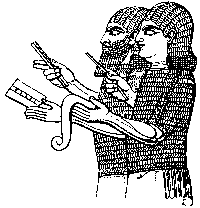

“Israel is an empty vine, He bringeth forth fruit unto himself” (v1). The more God blessed them, the more they proliferated their idols. But He would destroy their false gods (v2). Their calf would be carried off (v6); their king swept away (v3, 7, 15), their shrines destroyed and covered with weeds; they would wish the mountains to fall on them (v8). As their sins exceeded even those at Gibeah, where sexual perversion, rape and murder resulted in the near-annihilation of the tribe of Benjamin (v9, 9:9, cf Judges 19–20), so Israel’s sins would overtake them: they must repent (v12) or be ruined (v13–15).
Origin of the Samaritans “And [in 670 BC] the king of Assyria [Esarhaddon] brought men from Babylon, and from Cuthah, and from Ava, and from Hamath, and from Sepharvaim, and placed them in the cities of Samaria instead of the children of Israel: and they possessed Samaria, and dwelt in the cities thereof” (2 Kings 17:24, cf Ezra 4:2, 10). These people—the Samaritans —followed a mixture of religions (2 Kings 17:41) and were despised by the Jews (John 4:9, 8:48). Jesus’ parable of the Good Samaritan (Luke 10:30–37) turned this term of abuse into a byword for Christian charity.
Many of Judah deported too Except for “gleaning grapes” (Isaiah 17:6), the captivity of the 10 tribes was now complete. Tiglath-pileser III had previously depopulated Gilead, Naphtali and Galilee (2 Kings 15:29) and Reuben, Gad and Manasseh (1 Chronicles 5:26). The entire House of ISRAEL became extinct in Palestine in 670 BC, so fulfilling the prophecy of Isaiah 7:8 given in 735 BC and commenced in 2 Kings 10:32. Note: “In [701 BC] did Sennacherib king of Assyria come up against all the fenced cities of JUDAH, and took them” (2 Kings 18:13, 2 Chronicles 32:1, Isaiah 36:1). He captured 46 fortress-cities of Judah and many smaller towns, and deported 200,150. See Sennacherib’s own record of his campaign inscribed on a six-sided baked clay prism in the British Museum: 
... I then besieged Hezekiah of Judah who had not submitted to my yoke, and I captured 46 of his strong cities and fortresses and innumerable small cities which were round about them, with the battering of rams and the assault of engines, and the attack of foot-soldiers, and by mines and breaches [made in the walls]. I brought out therefrom 200,150 people, both small and great, male and female, and horses, and mules, and asses, and camels, and oxen, and innumerable sheep I counted as spoil. [Hezekiah] himself, like a caged bird, I shut up within Jerusalem his royal city. I threw up mounds against him, and I took vengeance upon any man who came forth from his city.These 200,150 Judahites were taken into captivity alongside the 10 tribes, never to return but in the Christian dispensation also to be re-covenanted to the Lord. Hence Paul speaks of “our twelve tribes, earnestly serving God” (Acts 26:7 RV).
“It is time to seek the LORD, till He come and rain righteousness upon you” (v12). For centuries they would bear no sign of being His people. Then He would come, and be “the LORD our Righteousness” (Jeremiah 23:6, 33:16, 1 Corinthians 1:30). They would be His people again, sons of God!
Assyrian scribes counting prisoners
Next chapter | back to Contents | back to Introduction and Map